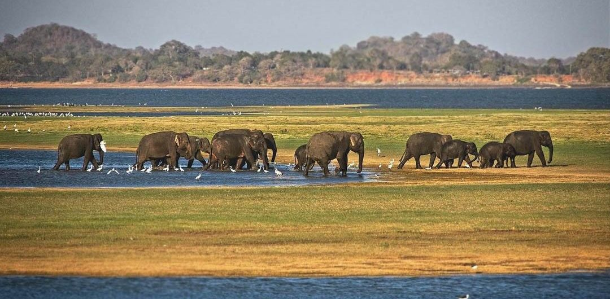
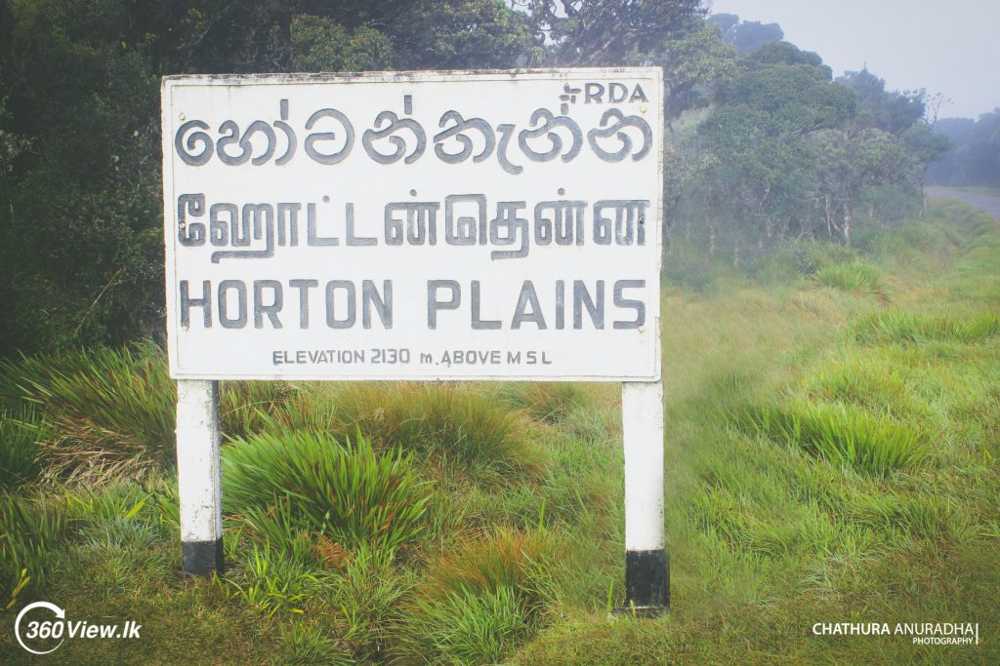

Seven Wildlife Higlights:
Seven animals you have to see in the Pearl of the Indian Ocean
Like many islands, Sri Lanka boasts a high number of endemic species, animals and plants found nowhere else on Earth.
The country is also regarded as one of the world's top five hotspots for biodiversity,
testament to the sheer number of species which call the tear drop isle home.
Sri Lanka teems with wildlife. From great herds of trumpeting Asian elephants to elusive leopards and strange looking sloth bears,
the country's national parks are home to all manner of amazing creatures.
Here's a guide to what you can expect to see during your visit.The Sri Lanka department of Wildlife Conservation recently published a
list of the seven most iconic wild animals in the island as a way of promoting tourism
and the conservation of all species in and outside this list.
Sri Lanka is somewhat of an outlier when it comes to biodiversity.
Experts have been studying the biodiversity of this small island since the early 20th century, and all with good reason.
The number of animal species in the island is said to be five times as much as it is supposed to be in an island of its size,
and the number of endemic species in the country is amazing. From endemic birds to endemic primates, Sri Lanka has them all.
The wonder of Sri Lanka – being such a small island – is that you don’t have to travel far to see any of them.
Gal Oya National Park
Gal Oya National Park
The only national park in Sri Lanka where you can take a boat safari, Gal Oya protects the vast Senanayake Samudra Reservoir.
The park is home to 32 mammal species, with a visitor highlight being the sight of herds of elephants swimming across the reservoir from one island to another
>
Minneriya National work


As part of Sri Lanka’s elephant corridor, large numbers of elephants migrate across the country to Minneriya every year.
Known as ‘The Gathering’, as many as 300 come to the park’s reservoir in the largest meeting of Asian elephants anywhere in the world.
Horton plains national park


Set over 2,000 metres above sea level, the Horton Plains feel a world apart from the rest of Sri Lanka.
Large areas of the park are covered in pristine cloud forest, with dramatically plunging cliffs at its southern boundary.
Home to a variety of endemic species, it’s one of the best places for bird watching.